Spider-Man: Brand New Day
AI Analysis on RTX 5060
162 frames · Moondream vision · Tesseract OCR · Whisper STT
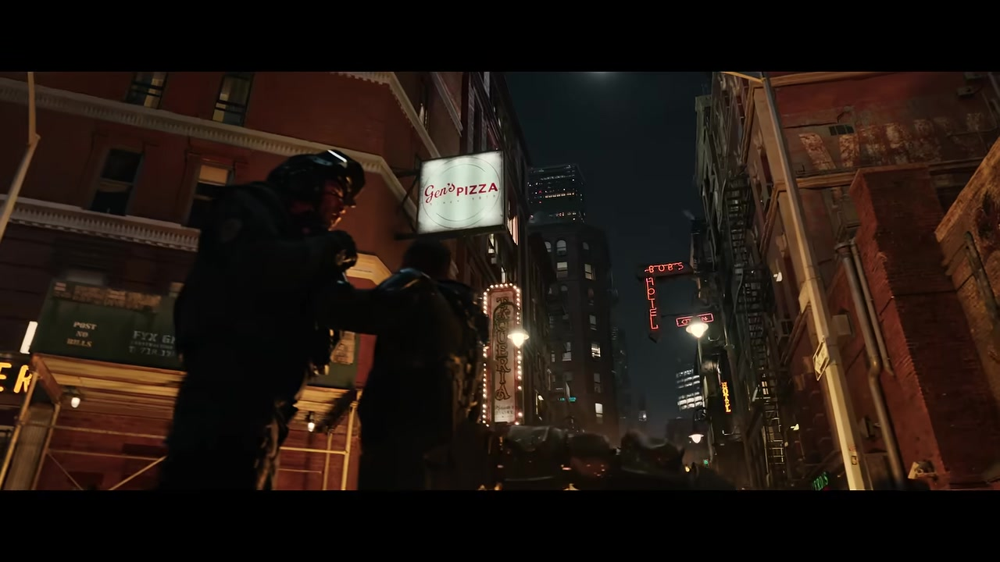
In the image, a man is standing on a street corner in front of a building. He appears to be looking at something or someone off-camera and is wearing a black jacket. There are several other people visible around him, but they they are not the main focus of the scene. The overall atmosphere seems to b be that of an urban setting with various elements such as buildings, cars, and traffic lights in the background.
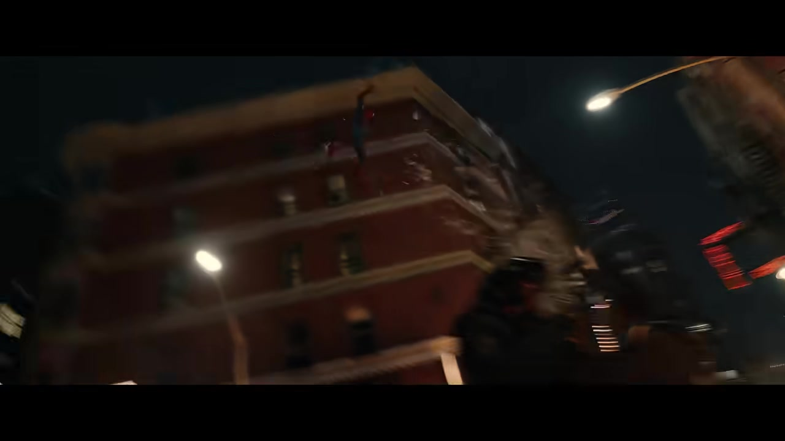
The image shows a tall building with multiple floors, and the scene is capt captured at night. A person can be seen hanging from one of the upper level levels of the building, possibly performing an acrobatic stunt or simply en enjoying the thrill of being suspended in mid-air. The lights on the buildi building illuminate the area, creating a dramatic atmosphere for this night nighttime spectacle.
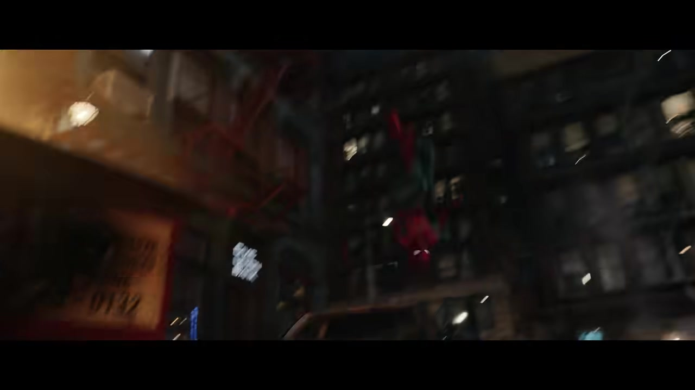
The image shows a city street at night with tall buildings and bright light lights. A car is driving down the street, while another car is parked on th the side of the road. The scene also features a person standing near one of of the buildings, possibly waiting for someone or just enjoying the view.
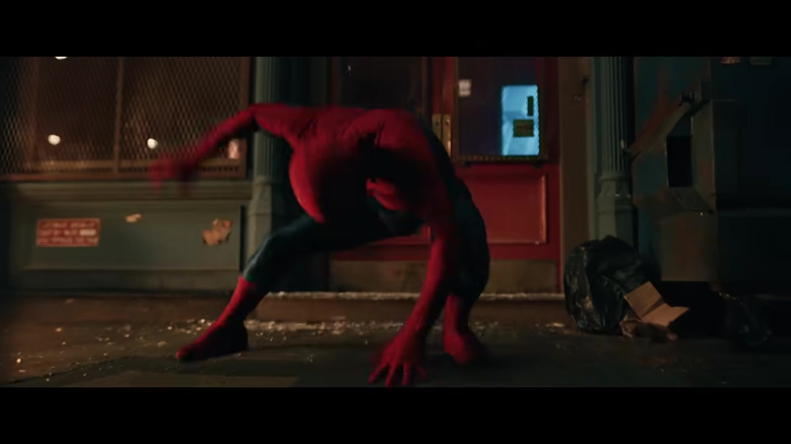
The image features a person dressed in a red and black suit, possibly Spide Spiderman, crouching down on the ground. The individual is positioned near an open door or window, with their body angled towards it as if they are ab about to enter or exit through that opening. There is also a backpack place placed nearby, suggesting that this scene might be taking place in a public public area such as a street or park.
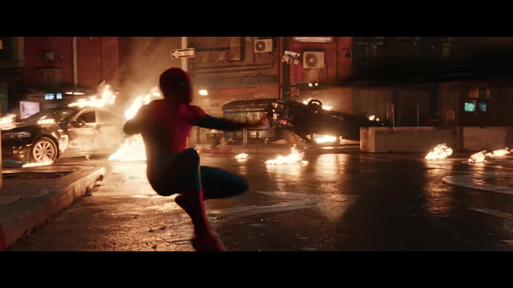
The image shows a person in a Spiderman costume, standing on the street and and holding a spider web. The scene is set at night with fireflies illumina illuminating the area around them. There are several cars parked nearby, in including one car that appears to be ablaze. In total, there are six cars v visible in the scene, with some closer to the person and others further awa away. The person's Spiderman costume includes a red and blue suit, which stands o out against the dark background of the image. The fireflies add an element of magic and wonder to the scene, creating a captivating atmosphere for vie viewers.
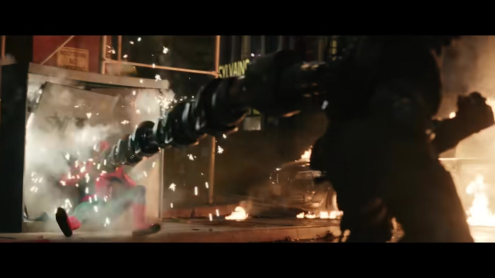
The image shows a scene from the movie Spiderman, where a man is seen swing swinging his web-shooters at an object. The web-shooters are attached to hi his body and he appears to be in motion as he swings them towards the targe target. In addition to the main action, there are several other people pres present in the image, possibly indicating that this scene takes place in a busy or crowded area. The background of the image features a building with smoke coming out of it it, suggesting an urban setting. The smoke adds to the intensity and atmosp atmosphere of the scene, making it even more captivating for viewers.
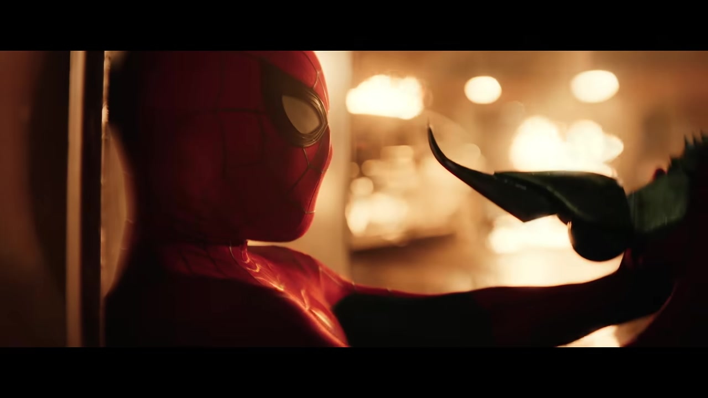
The image features a close-up of Spiderman's face, with his red suit and ma mask clearly visible. The background is dark and blurred, making it difficu difficult to discern any specific details beyond the spider character itsel itself.
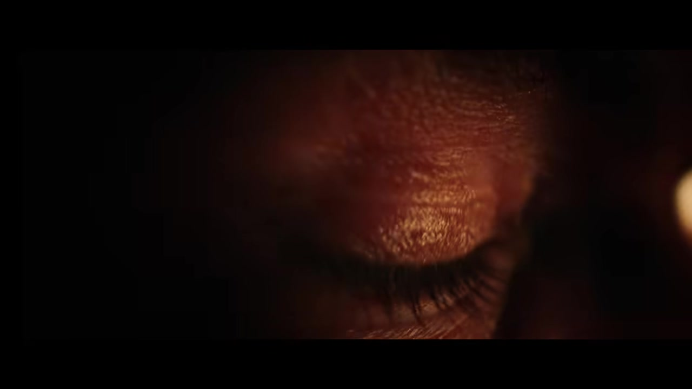
The image shows a close-up of an eye, with the iris and pupil clearly visib visible. The light source is positioned to the right side of the frame, ill illuminating the eye in a dark environment. This creates a dramatic effect that emphasizes the details of the eye's structure and highlights its impor importance as a vital organ for vision. The image does not contain any text or other discernible objects, making it it difficult to determine if there is an additional element present. The fo focus on the eye suggests that the viewer might be interested in studying t the anatomy or biology behind this essential bodily function.
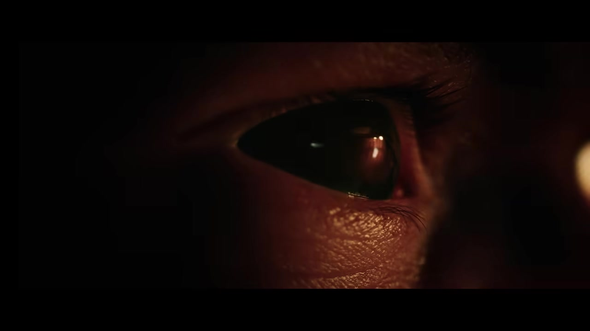
The image shows a close-up of an eye, with the iris and pupil clearly visib visible. The iris is a dark red color, while the pupil appears to be black in contrast. This creates a striking visual effect that draws attention to the eye's intricate details.
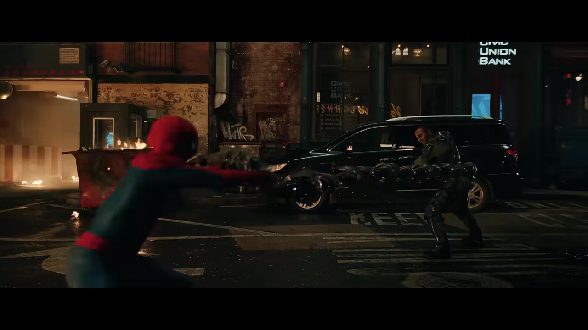
The image shows a man in a Spiderman costume standing on the street, holdin holding onto his web-slinging suit. Another person is also present in the s scene, but they are not wearing any costume and appear to be just walking b by or observing something. A car can be seen parked nearby, adding context to the urban setting of the image.
Pod tte ie aR Were.
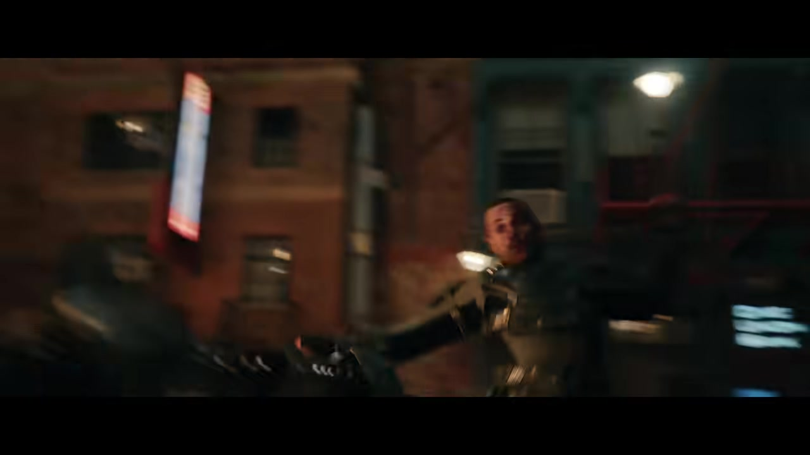
The image shows a person wearing a motorcycle suit, standing on the street with their arms outstretched. The scene appears to be from an action movie or a similar film genre, as there is a car and a building visible in the ba background. The person's pose suggests they are either posing for a photo o or actively engaging in an exciting moment within the scene.
4) ote
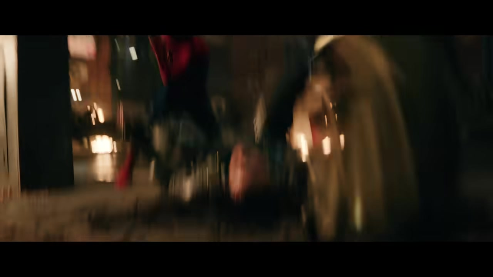
The image shows a scene from the movie Spiderman, where two men are running running through an alley. One of them is wearing a red and black suit while while the other one has his back turned to the camera. The background revea reveals that they are in a city setting with buildings visible behind them.
4)
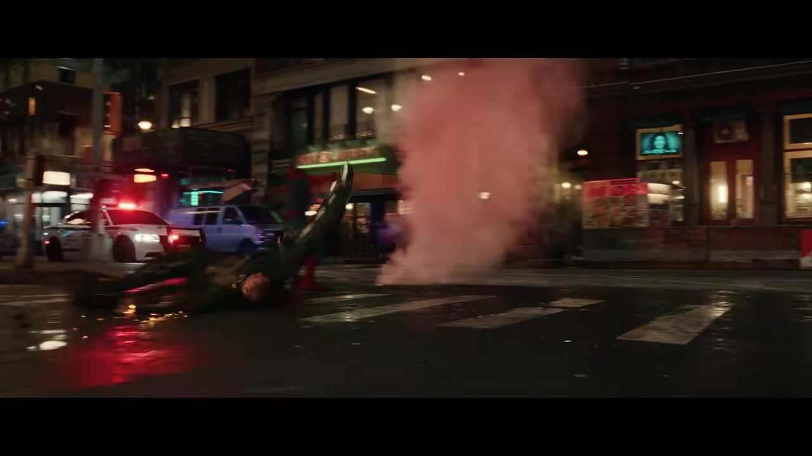
In the image, a man is seen lying on his back in the middle of an intersect intersection. He appears to be injured and possibly in pain or distress. Th The scene takes place at night with various vehicles around him, including cars and trucks. A firework can also be observed in the air above the man's man's head. The street has a few pedestrians nearby who seem to have stopped their acti activities to attend to the situation. There are traffic lights visible on both sides of the intersection, indicating that it is an urban setting with with controlled traffic flow.
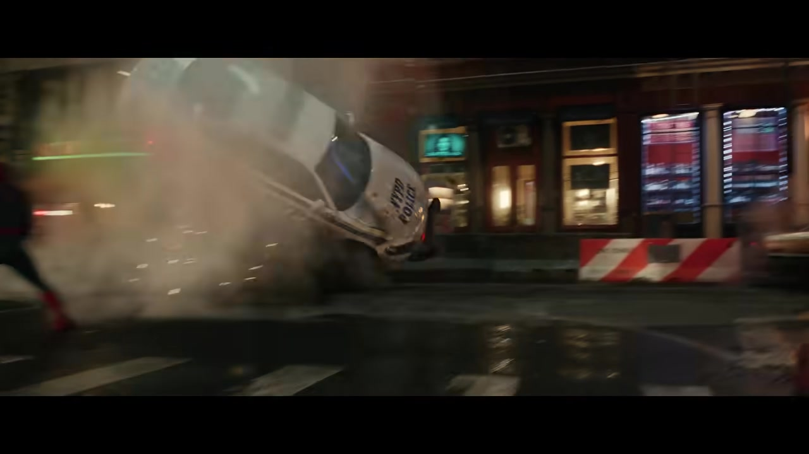
The image shows a car flying through the air, with its wheels off the groun ground. The scene takes place in an urban setting, possibly on a city stree street or near some buildings. There are two people visible in the backgrou background, one closer to the left side of the frame and another further ba back towards the right side.
The image shows a square-shaped black and white background with the word "M "M" written in capital letters. The contrast between the black background a and the white lettering makes it stand out prominently, drawing attention t to the message or name displayed on the surface.
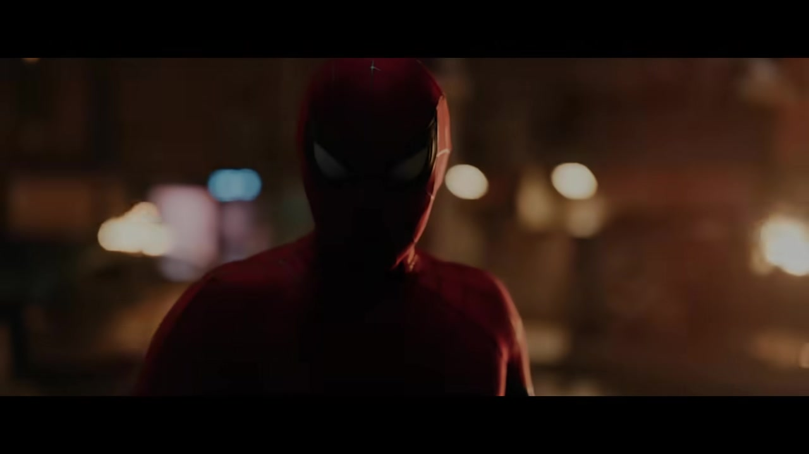
The image features a man dressed in a red suit, possibly resembling Spiderm Spiderman. He is standing against the backdrop of a dark city street at nig night with multiple cars and buildings visible around him. The scene appear appears to be from a movie or television show, as it captures the character character's face clearly for viewers to see his expression.
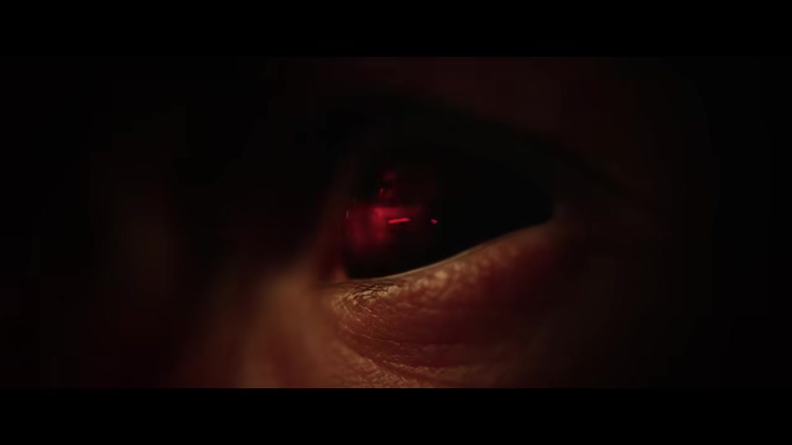
The image shows a close-up of an eye, with the iris being red and glowing. The background is dark, which emphasizes the vibrant color of the iris. The The focus on the eye's iris highlights its striking appearance against the darker surroundings.
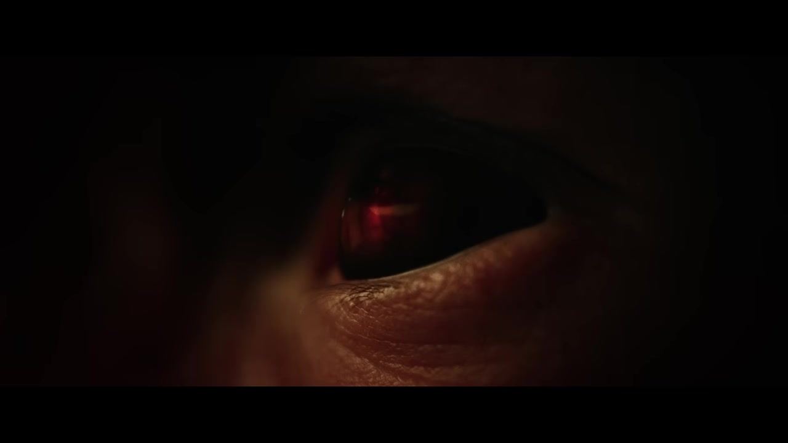
The image shows a close-up of an eye, with the red pupil and iris visible. The background is dark and out of focus, drawing attention to the eye as th the main subject in the scene.
The image shows a large screen displaying the Sony logo. The logo is promin prominently positioned in the center of the frame, surrounded by a gradient gradient background that transitions from blue to purple and orange hues. T This vibrant color scheme creates an eye-catching visual effect, making the the Sony logo stand out against the backdrop.
The image features a large, red banner that displays the words "Marvel Stud Studios" in white letters. The banner is positioned horizontally and spans across the entire width of the frame. It has a metallic sheen to it, giving giving it an elegant and sophisticated appearance.
STUDIOS
The image features a large, red banner that displays the words "Marvel Stud Studios" in white letters. The banner is positioned horizontally across the the frame and occupies most of the space from left to right. The bold red c color of the banner contrasts with the black background, making it stand ou out prominently.
MARVELS
The image shows a person holding up their cell phone to take a picture of t themselves in the mirror. The reflection is clearly visible on the screen, capturing the individual's face and upper body. This scene demonstrates how how people often use smartphones for self-portraits or selfies, allowing th them to share moments with others online or keep memories of their daily li lives. The person holding up the phone appears to be wearing glasses, which adds a a sense of style and personality to the image. The overall atmosphere seems seems casual and relaxed as the individual captures this moment in their da day.
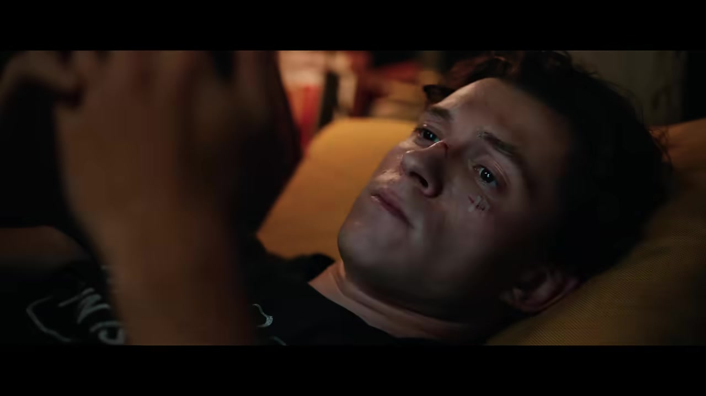
The image shows a close-up of a man lying on his stomach in bed. He has dar dark hair and is looking down at something, possibly a book or a piece of p paper. The scene appears to be set indoors with a couch visible behind the man.
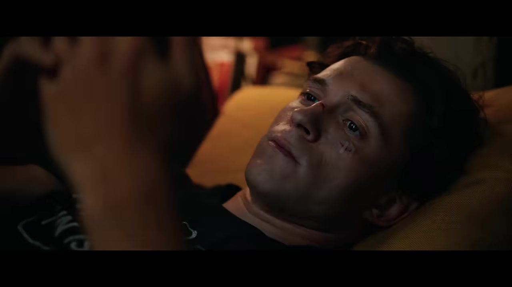
The image shows a close-up of a man lying on his stomach in bed. He is look looking down at something, possibly a cell phone or a book, with an intense intense expression on his face. The scene appears to be set indoors and cap captures the man's attention as he focuses on whatever it is that he is loo looking at.
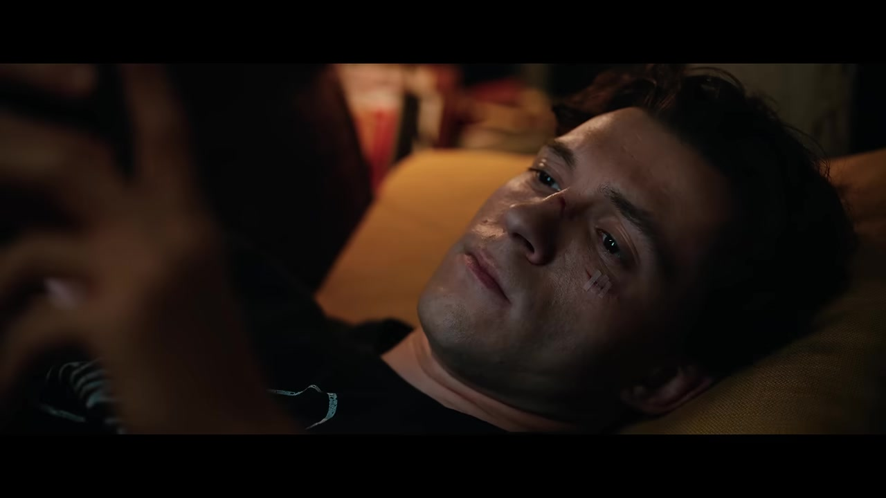
In the image, a man is lying down on his bed with his eyes closed and looki looking at something in front of him. He appears to be deeply focused or lo lost in thought. The scene takes place indoors, possibly in a bedroom setti setting. There are no other people visible in the picture, and there are no no texts or objects that can be identified from the image description provi provided.
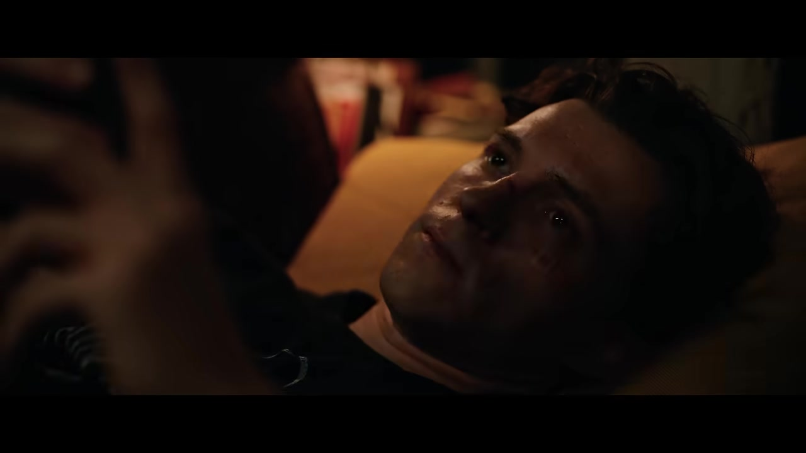
The image shows a close-up of a man lying on his stomach in bed. He has dar dark hair and is looking up at the camera with an intense expression, givin giving off a serious vibe. The room appears to be dimly lit, which adds to the overall moody atmosphere of the scene.
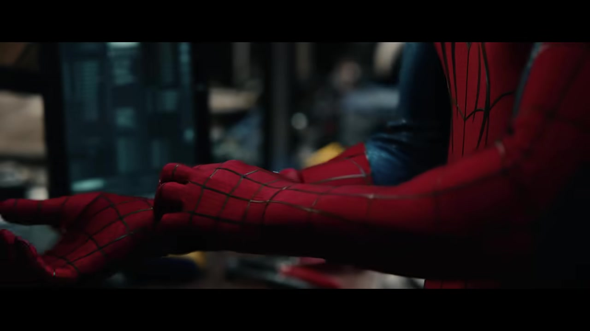
The image shows a close-up of two people's hands, with one hand being the f focus. The person on the left has their hand resting on the other person's hand, while both individuals are wearing red spiderman costumes. In the bac background, there is another person partially visible behind them.
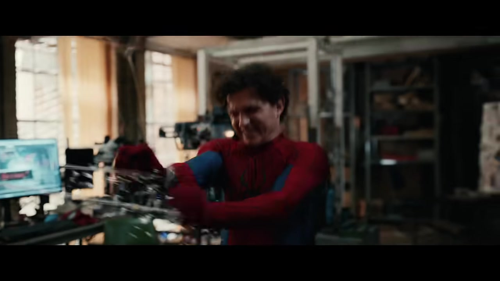
The image features a man dressed in a Spiderman costume, holding up his arm arms and smiling. He is standing in front of a desk with a computer monitor monitor on it, which suggests that he might be working or studying related to the movie's content. The room appears to have a casual atmosphere, as th there are no other people visible in the image.
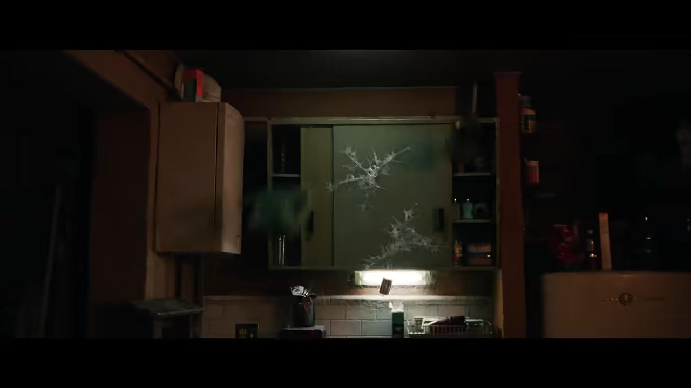
The image shows a kitchen with a sink and cabinets. The sink is located on the right side of the room, while the cabinets are positioned above it. A w window can be seen in the background, allowing natural light to enter the s space. On top of one of the cabinets, there is a small bird figurine or dec decoration.
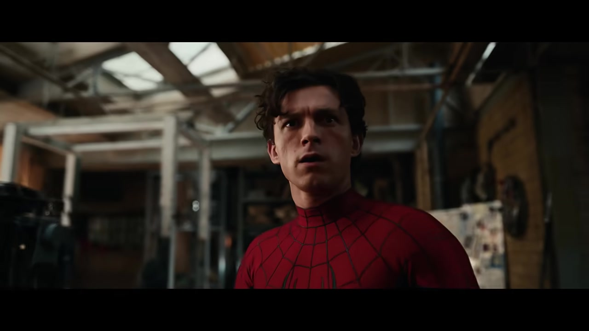
The image features a man dressed in a red Spiderman costume, standing in an an industrial setting. He is looking up with a serious expression on his fa face as he gazes into the distance. The background of the scene includes a building and some pipes, giving context to the location where this moment t took place.
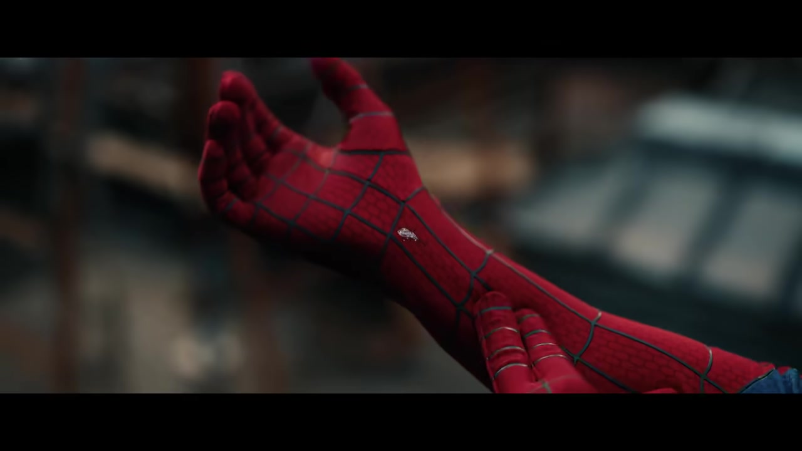
The image shows a close-up of the hand of Spiderman, with his fingers sprea spread out. The hand is positioned in front of the viewer and appears to be be holding up something above it. The background features an urban setting with buildings visible behind Spiderman's arm.
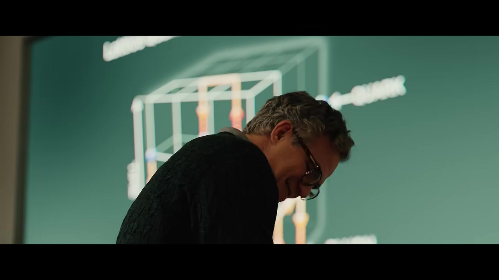
The image features a man wearing glasses and sitting in front of a computer computer screen. He is leaning over the desk, possibly working on a project project or studying something displayed on the monitor. The scene suggests that he might be engaged in an activity related to science or technology, a as indicated by the presence of a computer and a projector screen behind hi him. The man's position and focus on the computer screen imply that he is deeply deeply involved in his work or study, possibly working on a presentation or or conducting research. The image captures a moment where the man is active actively engaged with the content displayed on the monitor, highlighting th the importance of technology and information in today's world.
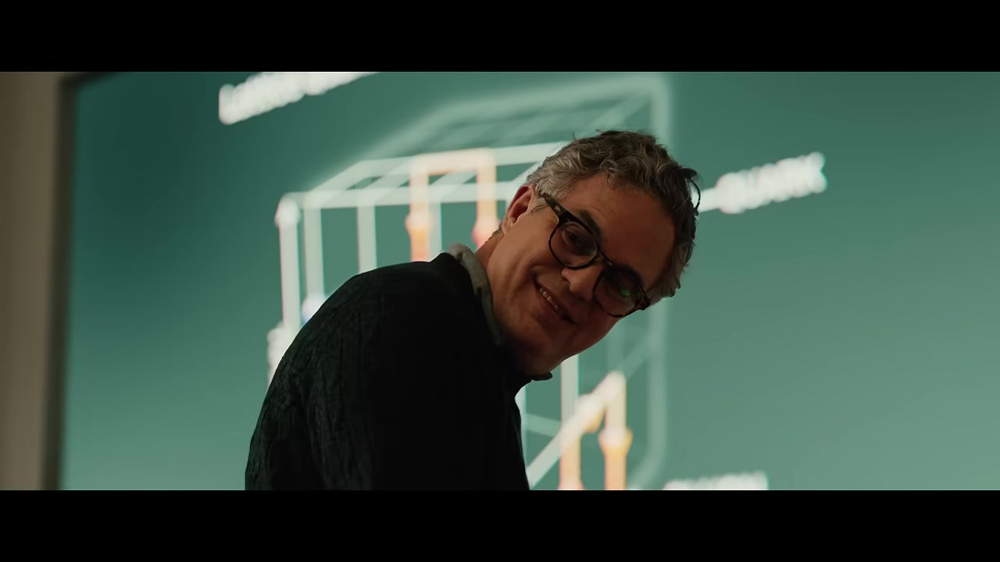
The image features a man wearing glasses and a black sweater, who is smilin smiling at the camera. He appears to be in front of a computer screen or a presentation board with various diagrams on it. The man's position suggests suggests that he might be giving a speech or presenting information related related to the diagrams displayed before him. There are several other people present in the image as well, but they are n not the main focus and do not appear to be directly involved with the man w wearing glasses and the computer screen.
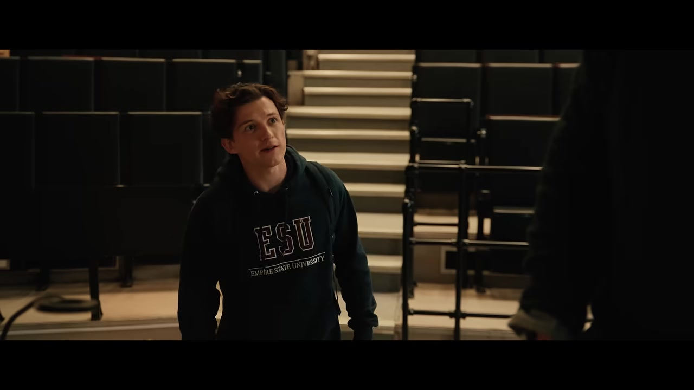
The image shows a young man wearing a hoodie, standing in an empty auditori auditorium. He is looking up at the ceiling with a concerned expression on his face. The auditorium appears to be devoid of any other people or object objects, emphasizing the solitude and quietness of the scene.
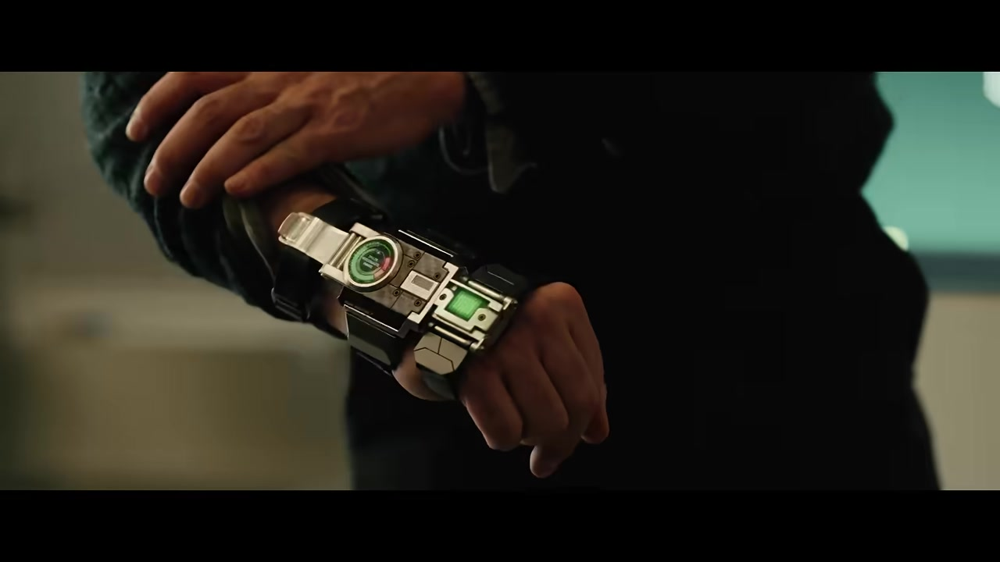
In the image, a person is wearing a wristwatch with a green face and silver silver band. The watch appears to be an electronic device that can also fun function as a remote control or a communication device. The individual is h holding the watch in their hand while standing near a wall.
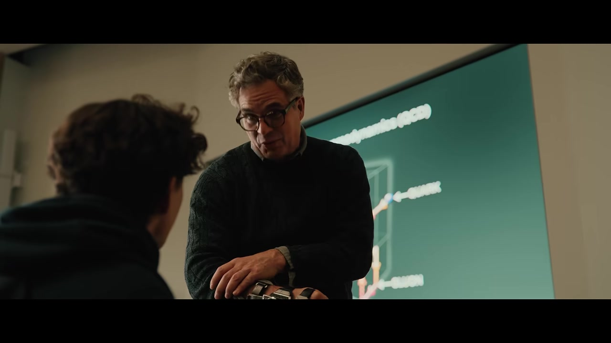
In the image, a man and a boy are sitting at a table in front of a large sc screen. The man is wearing glasses and appears to be giving instructions or or explaining something to the young boy. They seem to be engaged in an act activity that involves the use of a computer mouse on the table.
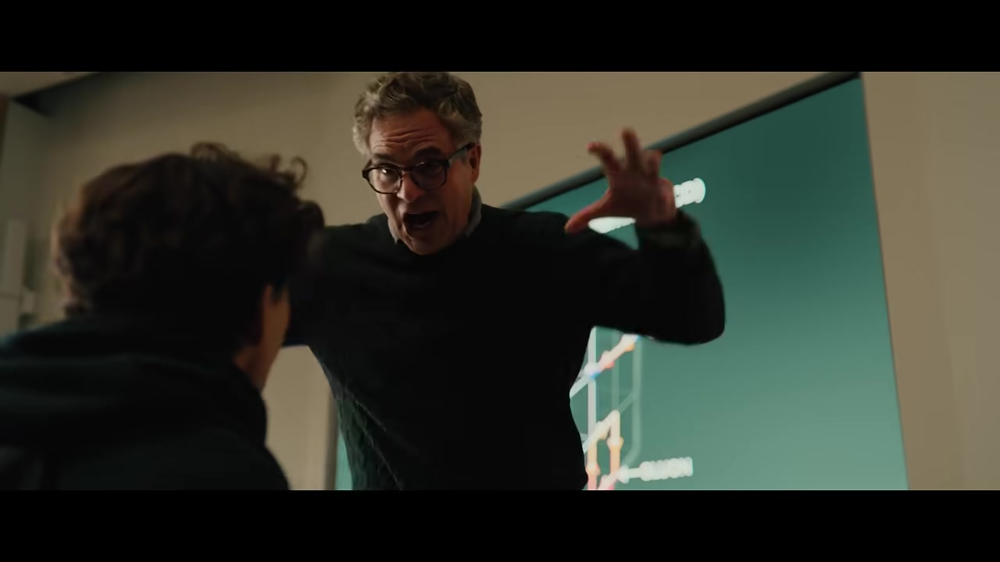
In the image, a man wearing glasses is standing in front of a projector scr screen and appears to be giving instructions or explaining something. Behin Behind him, there's another person who seems to be listening attentively. T The scene takes place in an indoor setting with a white wall as the backdro backdrop for their interaction.
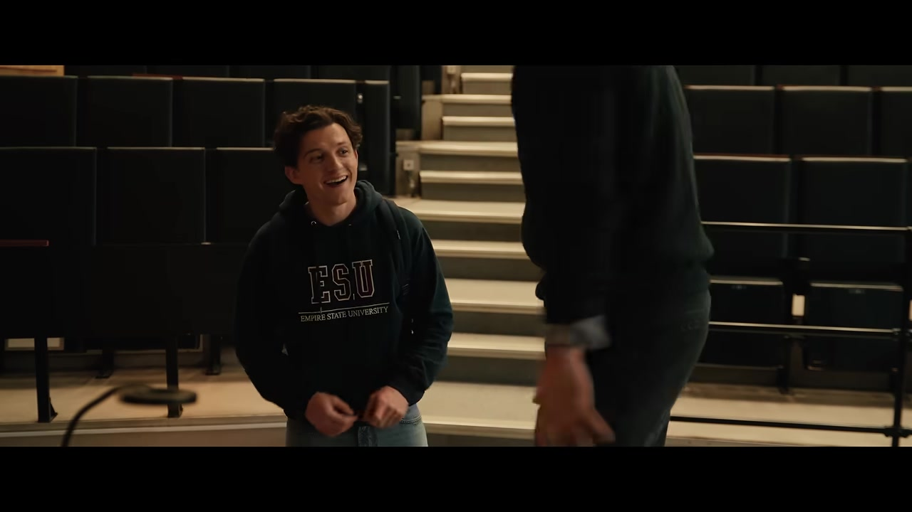
In the image, a man is standing in front of another person who appears to b be sitting down. The seated individual has his arms crossed and seems to be be looking at the standing man with an expression of annoyance or disapprov disapproval. The scene takes place in what appears to be a theater setting, setting, as there are multiple chairs visible around them.
The image shows a dark room with two people standing in the center, facing each other. They are positioned close together and appear to be having a co conversation or engaging in an activity. The background is blurred, making it difficult to discern any additional details about their surroundings.
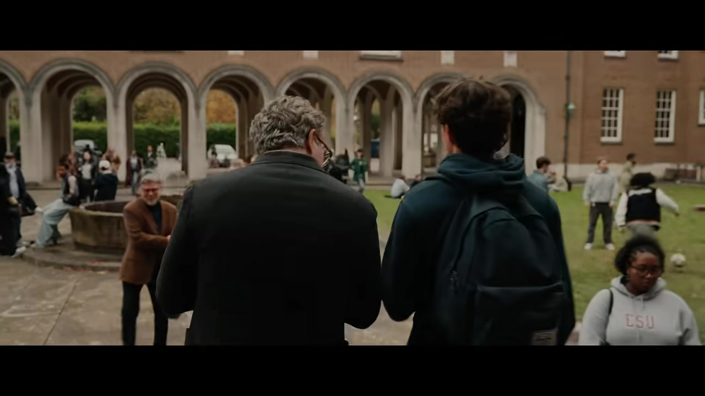
In the image, there are two men standing in front of a brick building. One man is wearing a suit and tie, while the other has a backpack on his back. They appear to be engaged in conversation or observing something happening outside the frame. In addition to these two main subjects, several other pe people can be seen scattered throughout the scene, some closer to the foreg foreground and others further away. A car is parked near the building, adding context to the urban setting of t the image. The presence of multiple individuals suggests that this could be be a busy area or a popular location for socializing or attending events.
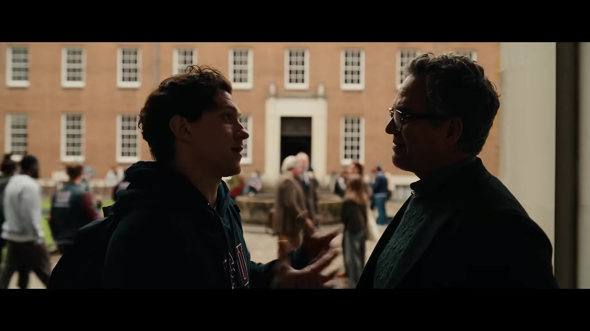
In the image, two men are standing in front of a large brick building. One man is wearing glasses and has his arm outstretched towards the other man w who is also wearing glasses. They appear to be engaged in conversation or p possibly having an argument. The scene takes place on a street with several several people walking by, some carrying backpacks. There are at least ten people visible in the image, including the two men s standing near the building. Some of them seem to be walking past the men, w while others appear to be engaged in their own activities or conversations.
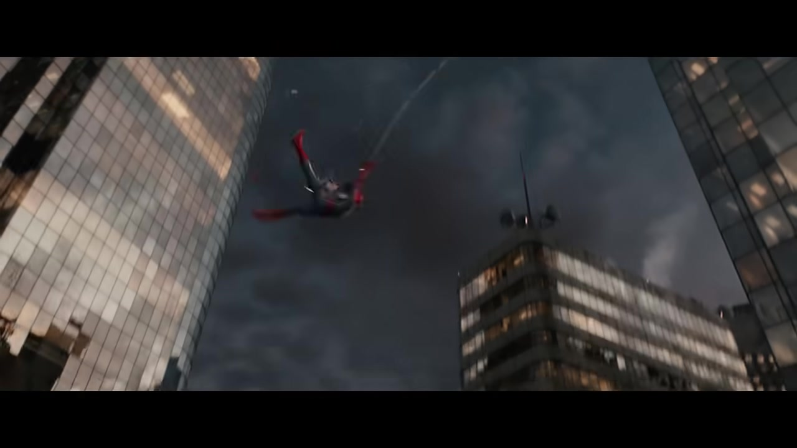
The image features a scene from the movie Spiderman, where the character is is flying through the air above a city. The superhero Spiderman can be seen seen in mid-flight with his legs spread wide apart and arms outstretched fo for balance as he soars over the buildings below him. In total, there are eight tall buildings visible in the scene, including on one on each side of the frame. The image captures Spiderman's impressive ae aerial maneuver against a dark sky backdrop, emphasizing the sense of motio motion and excitement within the movie.
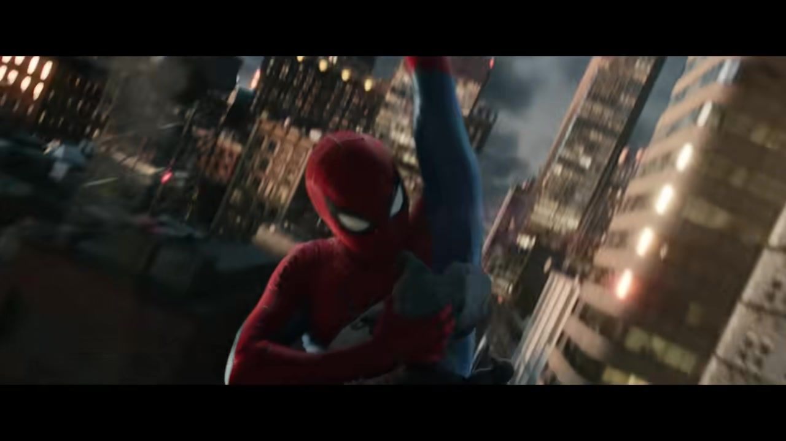
The image shows a close-up of a person wearing a Spiderman costume, with th their arms raised in the air. The person is standing on top of a building a and appears to be holding onto something or looking down from an elevated p position. The scene takes place in a city setting, which adds context to th the character's abilities as a superhero.
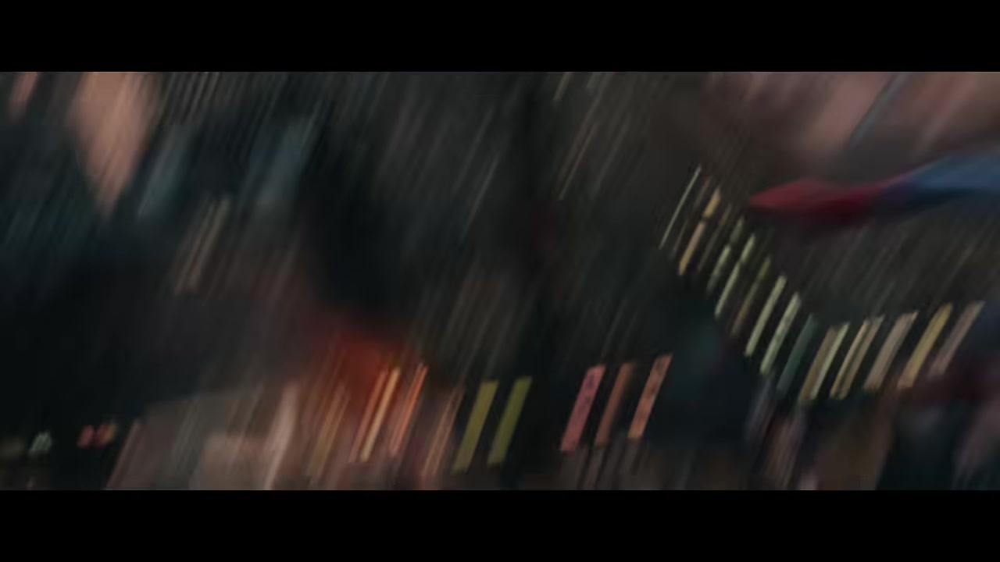
The image shows a blurred city street scene with buildings and cars. The fo focus is on the motion blur, which creates an artistic effect that emphasiz emphasizes the movement of objects in the scene. The background appears to be dark, providing contrast for the moving elements within the frame.
V4 |= iW y) 7] i Wf" " I
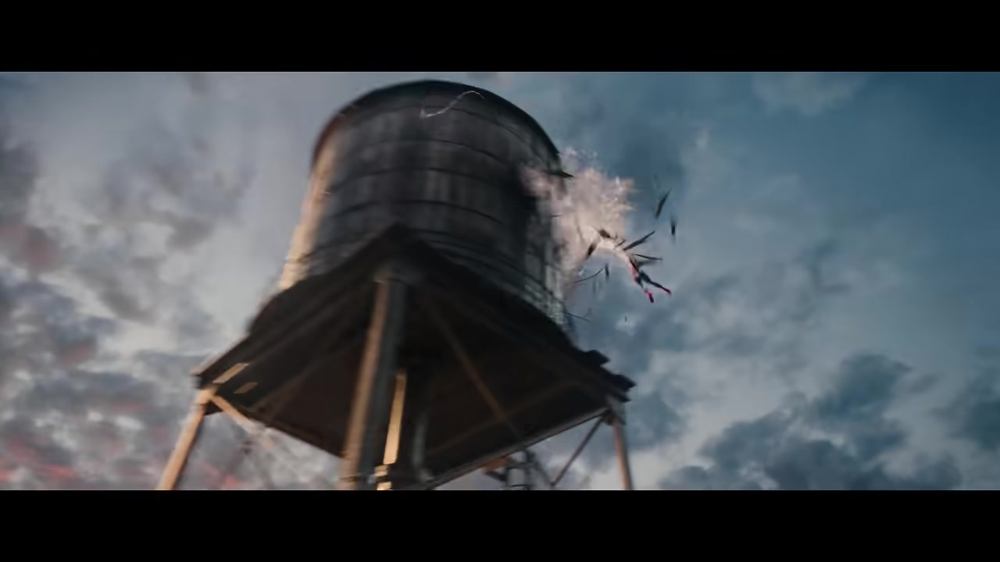
The image features a large, old water tower with a person standing on top o of it. The person is positioned near the center of the scene and appears to to be in mid-air as they jump off the water tower. There are several birds scattered around the area, some flying close to the person while others are are further away from the tower. The sky above them is filled with clouds, creating a dramatic backdrop for this unusual and thrilling moment captured captured in the image.
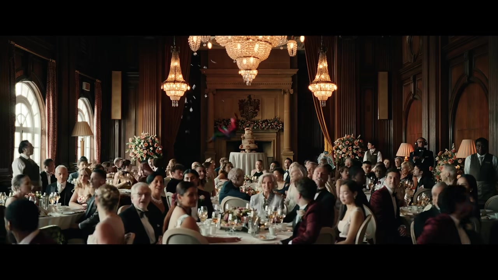
The image depicts a large room filled with people sitting at tables, enjoyi enjoying their time together. The guests are dressed in formal attire and a appear to be engaged in conversation or dining. There is a chandelier hangi hanging from the ceiling, adding an elegant touch to the scene. The chairs surrounding the tables are occupied by the guests, creating a lively atmosp atmosphere. In total, there are at least 14 people visible in the room, all all contributing to the social gathering.
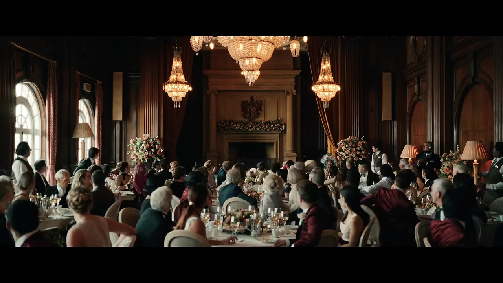
The image depicts a large group of people gathered in a room, sitting at ta tables and enjoying each other's company. The dining table is filled with v various items such as wine glasses, cups, bowls, vases, and potted plants. There are several chairs placed around the tables for guests to sit on whil while they dine or converse. Some individuals can be seen standing in the r room, possibly engaging in conversation or observing their surroundings. Th The atmosphere appears to be social and relaxed, with people enjoying a mea meal together in what seems to be an elegant setting.
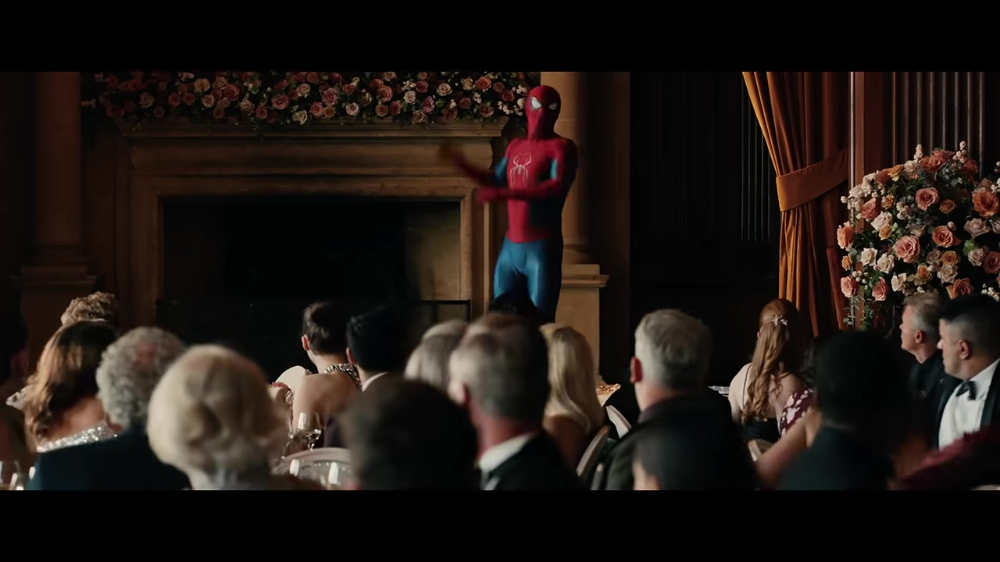
In the image, a man dressed as Spiderman is standing in front of an audienc audience at a formal event. The audience consists of several people seated around him, some wearing ties and others with more casual attire. A chandel chandelier can be seen hanging from the ceiling above them, adding to the e elegant atmosphere of the scene. The man in the Spiderman costume appears to be giving a speech or presentat presentation, capturing the attention of those present at the event. The au audience members are engaged and attentive, creating an interesting and uni unique moment for everyone involved.
In the image, a man wearing glasses is standing in front of an archway or d doorway. He appears to be smiling and engaging with another person who is a also present in the scene. The other individual can be seen on the left sid side of the frame but is not as prominently featured as the man with glasse glasses. The setting seems to be indoors, possibly a room or hallway, given the pres presence of an archway or doorway nearby.
The image shows a man wearing glasses and a suit, standing in front of an a archway. He is looking at another person who is also dressed in a suit. The The scene appears to be set within a building or a formal event venue, as t the two men are positioned close together with their gazes directed towards towards each other. The man on the left side of the image has his back turned to the archway an and seems to be engaged in conversation with the person on the right. The s second man is facing away from the archway, possibly listening or waiting f for something.
The image shows a man and an older gentleman engaged in conversation. The m man is wearing glasses, a blue hoodie, and has short hair. He appears to be be looking at the older gentleman with interest as they talk. Both individu individuals are facing each other, creating a sense of connection between t them.
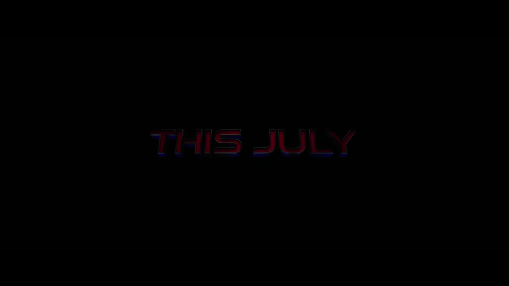
The image features a large, square graphic with the words "This July" writt written in red and blue neon colors. The text is positioned at the center o of the frame, making it the focal point of the design. The background appea appears to be black, which contrasts with the vibrant colors of the text. T This combination creates an eye-catching and modern look for the graphic.
THIS JULY
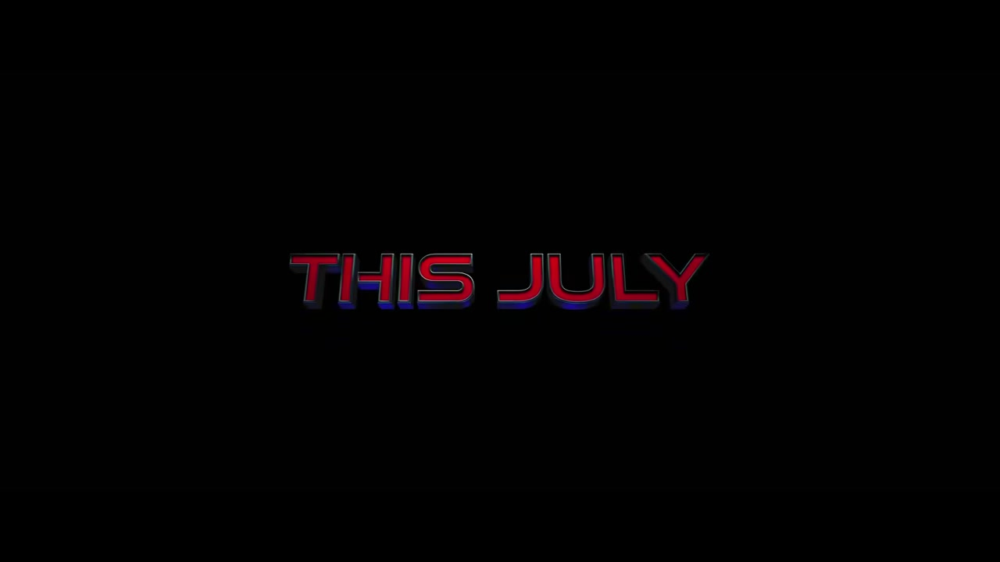
The image features a large, black background with the words "This July" wri written in red and blue neon colors. The text is positioned centrally on th the screen, making it the focal point of the scene.
THIS JULY
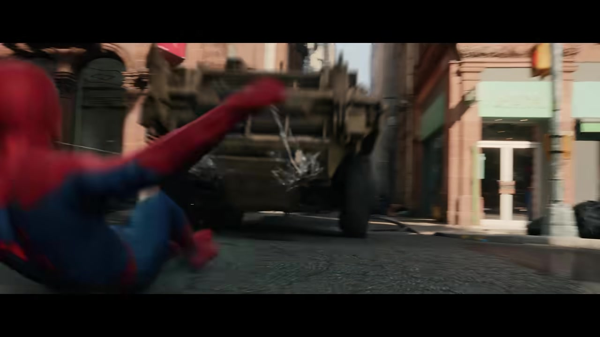
The image shows a person dressed in a Spiderman costume, lying on the groun ground and holding onto their arm. The scene takes place in front of an arm armored vehicle that appears to be moving quickly through the street. There There are also two other people visible in the background, possibly observi observing or participating in the same activity as the main character. The overall atmosphere suggests a sense of excitement and adventure, with t the person dressed in Spiderman engaging in some sort of action or play inv involving the armored vehicle.
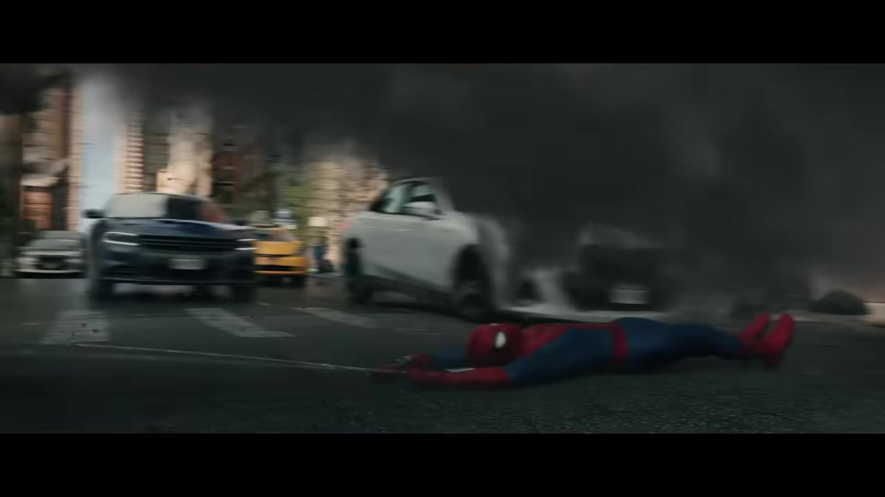
The image shows a person lying on the ground in front of an intersection, w with multiple cars and trucks surrounding them. The scene appears to be fro from a movie or TV show, as there is a car chase sequence taking place. The The person's position near the center of the frame adds to the intensity of of the moment captured in the scene.
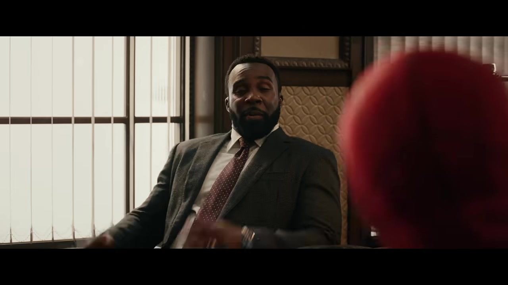
The image features a man sitting in an office chair, wearing a suit and tie tie. He is looking at the camera with a serious expression on his face. The The scene takes place indoors, possibly in an office setting or a professio professional environment.
_,
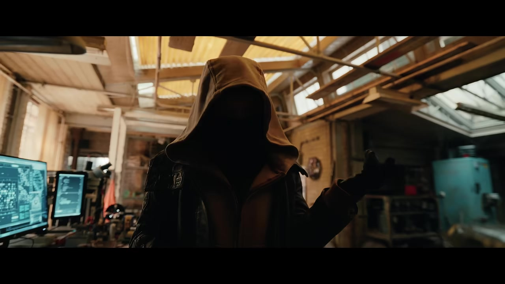
The image features a person wearing a hooded sweatshirt and gloves, standin standing in front of a computer monitor. The individual appears to be holdi holding up their hand or making a gesture towards the camera. There are two two other people visible in the background, but they do not seem to be the main focus of the scene. The setting is indoors with various objects present, including a keyboard a and mouse on a desk near the person wearing the hooded sweatshirt. A clock can also be seen hanging on the wall above the computer monitor.
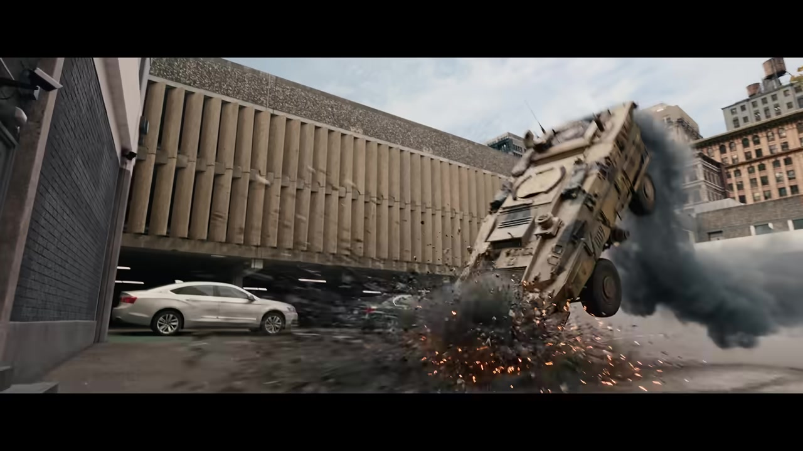
The image shows a car and an armored vehicle crashing into each other on th the side of a road. The car is positioned in front of the armored vehicle, which appears to be moving away from it. The armored vehicle has its wheels wheels raised off the ground as if it's about to fall over due to the impac impact with the car. The scene captures the intensity and force of the coll collision between these two vehicles.
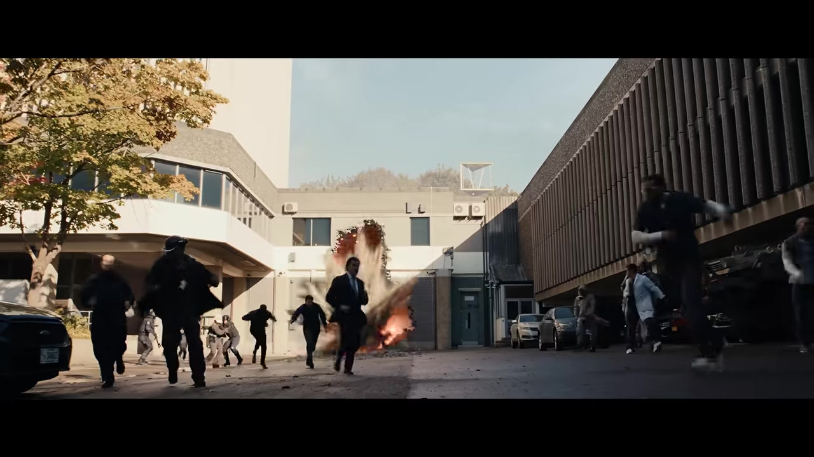
The image shows a group of people walking down the street, with some of the them carrying guns. The scene appears to be set in an urban environment, po possibly on a city street or near a building. There are at least ten indivi individuals visible in the picture, and they seem to be moving together as if they were part of a coordinated effort. Some of the people have their ar arms raised, which could indicate that they are engaged in a conversation o or discussing something important. The presence of guns among the group sug suggests that this might be an action movie scene or a situation involving law enforcement or military personnel.
The image shows an aerial view of a city with a river running through it. T The river is surrounded by tall buildings, and there are boats visible on t the water as well. One boat can be seen in the middle of the scene, while a another one is located closer to the right side of the image. This suggests suggests that the city has a bustling waterfront area where people might en enjoy recreational activities or commute using boats for transportation. Th The presence of tall buildings indicates that this location is likely withi within an urban setting with commercial and residential areas.
The image shows an aerial view of a city with tall buildings, including sky skyscrapers and apartment buildings. The tallest building is located on the the right side of the scene, while another taller one can be seen in the mi middle-left area. A river flows through the center of the city, surrounded by numerous buildings. There are several cars parked along the street, with a few more visible nea near the top edge of the image. The sky above is gray and cloudy, giving an an impression of overcast weather conditions.
The image shows a busy city street with several people walking and standing standing. A group of four individuals is prominently featured in the scene, scene, with one person holding a gun while another has a knife. The other t three people are scattered throughout the frame, some closer to the foregro foreground and others further back on the sidewalk. In addition to these ma main characters, there are also two more people visible in the background w who appear to be walking or standing near parked cars along the street. The scene is set against an urban backdrop with buildings lining both sides sides of the street. The presence of multiple vehicles, including a car and and a truck, further emphasizes the bustling nature of this city environmen environment.
The image features a man dressed in a Spiderman costume, walking down the s street. He is holding a cane and appears to be in character as he walks pas past people who are also present on the sidewalk. Some of these individuals individuals have ties visible around their necks, suggesting that they migh might be attending an event or gathering. In addition to the main subject, there are several other people scattered t throughout the scene, some closer to the foreground and others further away away in the background. A chair can be seen near the right edge of the imag image, possibly indicating a seating area for an outdoor event or social ga gathering.
The image depicts a lively scene at an outdoor party, with numerous people gathered around. Some of the attendees are standing and socializing, while others are sitting on chairs or benches. A group of people is seen in the f foreground, possibly dancing or enjoying themselves. In the background, the there's a helicopter flying overhead, adding to the festive atmosphere. The The scene also includes several wine glasses placed throughout the area, su suggesting that drinks might be flowing at this gathering.
The image features a yellow helicopter with the words "Just Married" writte written on its side. The helicopter is parked in front of an urban cityscap cityscape, which includes buildings and a bridge. The scene suggests that t this helicopter was used for a wedding or a special event, as it has been r repurposed to serve as a unique and memorable mode of transportation for th the newlyweds. The helicopter's position on top of a building indicates its elevated locat location within the city, providing an interesting perspective from above. The urban setting adds a sense of excitement and novelty to this unconventi unconventional wedding experience.
The image features a man dressed in a Spiderman costume, jumping off the si side of a tall building. He is wearing a red and blue suit with a yellow em emblem on his chest. The scene takes place in an urban setting, with severa several buildings visible below him. There are also two cars parked nearby, nearby, one closer to the foreground and another further away towards the r right edge of the image.
WSS
The image depicts a busy city street with tall buildings lining both sides. sides. The scene is filled with various vehicles, including cars and trucks trucks, driving down the street or parked along its sides. There are at lea least ten cars visible in different positions on the road, as well as two t trucks. A person can be seen walking near one of the parked cars, adding to to the bustling atmosphere of the cityscape. In addition to the vehicles, there is a fire hydrant located close to the c center of the street and another one further away from the main traffic flo flow. The tall buildings surrounding the street create an urban environment environment that showcases the vibrancy and activity of city life.
The image shows a group of people gathered in a room, with some standing an and others sitting. There are at least six individuals visible in the scene scene, including two men and three women. One man is holding a bottle, poss possibly suggesting that they have been drinking or socializing together. T The atmosphere appears to be casual and relaxed as the friends enjoy each o other's company.
> . ~ te oT 3 2 P ad 1
The image shows a man standing in the center of a room, surrounded by sever several people. The man is wearing a black jacket and appears to be looking looking at something off-camera. There are multiple people in the scene, so some closer to him while others are further away. A few individuals can als also be seen holding drinks or glasses, suggesting that they might be enjoy enjoying beverages together.
The image shows a person standing in front of a wall with various photos an and pictures on it. The individual is holding a cup, possibly containing co coffee or tea, while looking at the items displayed on the wall. There are multiple cups visible in the scene, suggesting that this person might be en enjoying their beverage amidst the visual stimuli from the wall decorations decorations.
it i 2 “Tae 2 =
The image features a bulletin board with various photos and papers attached attached to it. The most prominent photo is of Spiderman, which is located in the top left corner of the board. There are also several other photos on on the board, including one of a man's face, another Spiderman picture, and and an image of a person holding a spider web. In addition to these images, there are multiple papers attached to the bull bulletin board, with some appearing to be related to Spiderman or the Marve Marvel Comics universe in general. The overall scene suggests that this is a display showcasing different aspects of Spiderman's character and his adv adventures.
} Spider-Man'Unmasked: Could this Latinas == am Parkour vay bethe Web-Swinger? ===
The image features a collage of various photos, including one of Spiderman and another with a person taking a selfie. The collage is displayed on a wa wall or poster board, showcasing the different images in an artistic manner manner. The arrangement of the photos creates a visually appealing composit composition that captures the viewer's attention.
In the image, a woman is standing in a dimly lit room with a bookshelf behi behind her. She appears to be looking at someone who is also present in the the scene. The person on the right side of the frame seems to be engaged in in conversation or observing something that has caught their attention. The room itself contains several books scattered around, indicating an inte interest in reading or studying. A cup can be seen placed near one of the b bookshelves, suggesting a casual atmosphere where people might enjoy a beve beverage while they read or study.
The image features a young man sitting in front of a wall with various pict pictures on it. He is wearing a black jacket and appears to be looking at t the camera, possibly posing for a photo shoot or an interview. The backgrou background includes a desk area that has several photos hanging on it as we well.
> a
The image shows a man wearing glasses and a floral shirt, sitting in front of another person who is also wearing glasses. They appear to be engaged in in conversation or observing something together. The scene takes place indo indoors with various objects such as chairs and a dining table visible arou around them.
The image shows two people, a man and a woman, standing in front of a desk with computer equipment on it. The man is wearing glasses and appears to be be looking at the woman who is also wearing glasses. They seem to be engage engaged in conversation or discussing something related to their work. Ther There are multiple monitors visible behind them, indicating that they might might be working together on a project or collaborating on some task.
The image shows a woman standing in the center of a room, with her back to the camera. She is wearing a black dress and has long hair that falls down past her shoulders. The scene appears to be set indoors, possibly in a livi living or dining area. There are other people present in the background, bu but they are not the main focus of the image.
The image shows a young man sitting in front of a wall with various photos on it. He is wearing glasses and appears to be looking down at something, p possibly a book or a piece of paper. The scene takes place indoors, likely within a room that serves as his workspace or study area.
In the image, there are three young men standing in a room. One of them is holding a beer bottle and appears to be drinking from it while engaging wit with his friends. The other two guys seem to be observing him or waiting fo for their turn to join in on the fun. They all appear to be enjoying each o other's company as they spend time together in this casual setting. In addition to the beer, there are a few cups and a bottle visible in the s scene, suggesting that they might have been drinking earlier or are current currently consuming beverages during their gathering.
—— ey ry , S| Ey edi itnwl sa. / ,
In the image, a man and woman are standing in a kitchen. The man is leaning leaning over to touch the woman's head or shoulder, while she has her hand on his face. They appear to be engaged in an intimate moment within the sce scene. In addition to these two main individuals, there are several other p people present in the background, but they do not seem to be the focus of t this particular image. The kitchen itself is well-equipped with various items such as a refrigerat refrigerator and multiple cups placed on countertops or shelves. There's al also an oven visible near the right side of the scene. The overall atmosphe atmosphere suggests that it could be a movie set, capturing a tender moment moment between the couple in their home setting.
The image features a scene from the movie "The Dark Knight" with three peop people in it. The main focus is on a man wearing a hoodie, who appears to b be looking at the camera while standing next to another person and a third individual. They are all gathered together in what seems to be an indoor se setting or a room with lights turned on, creating a dark atmosphere that co complements the movie's theme of mystery and suspense. The man wearing the hoodie is positioned towards the center of the image, w while the other two individuals can be seen on either side of him. The scen scene captures the essence of the character "Dark Knight" as they interact with each other in a dark environment.
The image depicts a city street scene with a car driving down the road, sur surrounded by tall buildings. A large explosion has occurred in the middle of the street, causing debris to be scattered all over the area. The explos explosion is located near the center of the frame and appears to have cause caused significant damage to the surrounding environment. There are multiple people present on the scene, some closer to the explosio explosion while others are further away from it. A car can also be seen dri driving down the street amidst the chaos. In addition to these elements, th there is a trash can situated near the right side of the image, likely due to the debris being blown around by the explosion.
The image shows a man dressed in a Spiderman costume standing on the sidewa sidewalk, looking at another person who is also wearing a Spiderman costume costume. The two individuals appear to be engaged in conversation or observ observing something together. In the background, there are several other pe people walking along the street, some of whom might be pedestrians and othe others possibly involved with the Spiderman characters. The scene takes place on a city street where various elements such as traff traffic lights can be seen at different points. The overall atmosphere sugg suggests that this could be an event or gathering related to the Spiderman franchise, or it may simply be a casual encounter between two fans of the c character.
The image features a person dressed in a red Spiderman costume, standing on on the side of a street. The character is wearing a mask with spider eyes a and holding a spider web-like object in their hand. There are several other other people visible in the background, but they appear to be blurred or ou out of focus due to the distance from which the image was taken. In addition to the Spiderman figure, there is also a car parked on the stre street behind them. The scene captures an urban setting with various elemen elements such as buildings and traffic lights, creating a sense of a busy c city environment.
The image shows a busy street scene with numerous people walking and standi standing in the crosswalk. There are at least 13 visible pedestrians, some of whom appear to be carrying handbags or backpacks as they navigate throug through the area. The street is lined with various shops and buildings, cre creating an urban atmosphere. A few chairs can also be seen scattered throu throughout the scene, possibly belonging to outdoor seating areas in a near nearby café or restaurant.
The image captures a bustling street scene with numerous people walking aro around and interacting. The perspective of the photo is taken from above, p providing an aerial view of the busy area below. There are at least 13 visi visible individuals in various positions throughout the frame, some closer to the camera while others are further away. This dynamic environment showc showcases the lively atmosphere of a city street filled with pedestrians go going about their day.
The image features a man dressed in a suit and tie, standing on the sidewal sidewalk of an urban street. He is looking directly at the camera with a se serious expression. The background shows various elements of city life, inc including cars parked along the street, traffic lights, and other pedestria pedestrians walking by. There are also two bicycles visible near the edge o of the frame.
The image features a man dressed in a Spiderman costume, standing on the si sidewalk and looking at the camera. The man is wearing a red suit with spid spider web patterns and blue boots that match his Spiderman mask. In the ba background, there are two people visible - one person closer to the left si side of the frame and another person further back towards the right side. The scene takes place on a street where various shops can be seen in the di distance. The man's costume stands out against the backdrop as he walks pas past these shops.
The image shows a person's silhouette, or shadow, cast on the wall. The per person is standing in front of a window and appears to be suspended in mid- mid-air as if they are falling. This creates an interesting visual effect t that adds depth and intrigue to the scene.
q : | :
The image shows a person's reflection in the mirror, creating an interestin interesting visual effect. The scene takes place in front of a window with broken glass, adding to the overall atmosphere and sense of mystery. The pe person is standing near this window, possibly looking out or observing thei their surroundings.
2.) We Les
The image features a person's shadow cast on the ground, creating an intere interesting visual effect. The shadow appears to be floating in front of a car that is parked nearby. This scene suggests that it might have been take taken during daylight hours or under bright sunlight, as the shadows are cl clearly visible and distinct.
~~!
The image shows a person holding a camera in their hand, with the camera po pointed towards an object. The background appears to be dark and blurry, wh which makes it difficult to see any specific details about the scene or the the object being photographed.
In the image, a person is holding up an object that appears to be a camera. camera. The individual's hands are positioned in front of the camera, with their fingers pointing towards it. The scene takes place indoors or within a room, as there is no visible outdoor setting.
The image features a close-up of a person wearing a red Spiderman costume, standing in front of a window. The individual is positioned centrally withi within the frame and appears to be facing away from the camera. The backgro background reveals that they are indoors, possibly in a room with a desk or or other furniture items such as a chair and a book.
The image shows a person wearing a red shirt standing in front of a window, window, with the back of their head visible. The scene appears to be set in indoors, possibly at home or an office setting. A white light is shining th through the window onto the person's face, creating a dramatic effect and d drawing attention to them. In addition to the main subject, there are two other people in the image: o one standing behind the person with the red shirt on their back and another another person partially visible at the top right corner of the frame.
i
The image features a close-up of a person wearing a red and blue Spiderman costume. The individual is standing in front of a window, with the backgrou background being dark and out of focus. This creates an interesting contras contrast between the person's vibrant costume and the obscure surroundings.
In the image, there are two people standing in a room. One person is wearin wearing a Spiderman costume and appears to be a character from the Marvel C Cinematic Universe (MCU), while the other person is dressed in regular clot clothes. They seem to be posing for a photo or participating in an event re related to their costumes. The room they are in has several chairs placed around, with one chair locat located near the Spiderman-clad individual and another two chairs positione positioned further away from them. A TV can also be seen on the wall behind behind the characters, suggesting that this scene might take place during a a movie or a themed event.
The image shows a large, dark room with a person standing in the center. Th The individual is wearing a black shirt and has their arms outstretched as if they are about to jump or make an aggressive gesture. In addition to thi this central figure, there are two other people present in the scene, one o on each side of the main character. The room appears to be filled with various objects such as a ladder positio positioned near the right edge and several pieces of equipment scattered ar around the space. The overall atmosphere seems tense or dramatic, possibly indicating an intense moment from a movie or TV show.
The image shows a scene from the movie Spiderman, where the main character is running through an underground tunnel. The tunnel appears to be filled w with debris and explosions, creating a sense of danger and urgency in the s scene. The character's position within the tunnel suggests that he is activ actively engaged in combat or rescue missions.
The image features a man in a Spiderman costume flying through the air, wit with his arms outstretched. He is positioned above a cityscape filled with tall buildings and skyscrapers, creating an urban setting for the scene. Th The perspective of the photo suggests that it was taken from below, looking looking up at the superhero as he soars through the sky. The Spiderman character appears to be in motion, showcasing his agility and and speed while flying over the city. This dynamic pose captures the essenc essence of the superhero's abilities and adds excitement to the scene.
The image shows a woman sitting at a desk with her mouth open, possibly in the middle of an intense conversation or speech. She is wearing a white shi shirt and appears to be focused on something outside the frame. The scene t takes place in what seems to be a living room setting, as there are multipl multiple chairs present around the area. A laptop can also be seen placed o on one of the chairs nearby.
re * Ff i a o.
The image shows a person wearing a red spiderman costume standing in front of a window. The person is holding a toy spider, which adds to the overall spooky atmosphere created by their costume and the setting. There are sever several books visible on shelves nearby, suggesting that this scene might b be taking place in an indoor space like a library or a room with a reading area. The person's shadow can also be seen on the wall behind them, further empha emphasizing the presence of light from the window. The overall scene is a c combination of spooky elements and everyday objects, creating a unique and intriguing atmosphere.
The image shows a woman sitting in a kitchen, with her head tilted to the s side. She is wearing a white shirt and has long hair that falls over her sh shoulders. The scene appears to be set in an old house or a room with a win window, giving it a cozy atmosphere. There are several objects around her, including chairs, a dining table, and various kitchen items such as bowls a and bottles placed on the countertops.
The image shows a woman and a man standing close to each other, with the ma man wearing a red spiderman costume. The woman is hugging the man's arm in a friendly manner. They are both smiling at the camera, creating an endeari endearing scene.
The image shows a woman and a man in a superhero movie scene. The woman is wearing a green jacket, while the man has Spiderman's iconic red suit on. T They are both standing close to each other with their arms outstretched as if they're about to perform an action or pose for a photo. In the backgroun background, there are buildings visible behind them, adding depth and conte context to the scene.
The image features a city skyline with tall buildings, including skyscraper skyscrapers and office buildings. The scene is captured from an elevated pe perspective, providing a bird's eye view of the cityscape below. A person c can be seen in the middle of the frame, possibly walking or standing near o one of the buildings. This individual appears to be wearing a red shirt, wh which stands out against the backdrop of the city skyline.
— \\V0 001) gaan » (BRA Ab
The image shows a scene from the movie Spiderman, featuring two characters standing on a sidewalk. One character is wearing a red shirt and black pant pants, while the other has a white shirt and blue pants. They are positione positioned in front of a building with an open door, possibly indicating th that they are inside or about to enter the building. The background reveals reveals more details about their surroundings, such as a train track runnin running through the scene. There is also another person visible in the image, standing further back on on the sidewalk. This adds depth and context to the scene, showcasing the v various elements of the movie's setting and atmosphere.
The image shows two people standing on a sidewalk, with one person wearing a red shirt and the other dressed in black. The person in the red shirt is holding out their hand towards the person in the black shirt, who is lookin looking down at them. Both individuals appear to be engaged in conversation conversation or interaction as they stand there together.
The image features a person in a Spiderman costume standing on the street, waving their arms. The character is wearing a red and blue suit with spider spider-like legs, giving them an imposing appearance. In the background, th there are two other people present - one closer to the left side of the fra frame and another further back towards the right side. The scene appears to be set in a dark alley or street, which adds to the ov overall atmosphere of the image. The person's costume and the darkness sugg suggest that they might be on a mission or an adventure related to Spiderma Spiderman.
The image features a man standing in front of a building, holding a gun. He He is wearing a black jacket and appears to be posing for the camera with a an intense expression on his face. The scene takes place at night, adding t to the overall atmosphere of the photo.
The image shows a city street at night with tall buildings lining the road. road. The sky is filled with fog, creating an atmospheric and mysterious am ambiance over the scene. In the distance, there are two airplanes flying th through the foggy sky, adding to the urban feel of the setting.
The image shows a man standing in front of a city skyline at night. The man man is wearing a blue shirt and appears to be looking up, possibly surprise surprised or intrigued by the view. There are several other people visible in the scene as well, but they are not the main focus of the image.
The image shows a man walking down the street at night, with his back to th the camera. He is wearing a backpack and appears to be in motion as he walk walks through an urban setting. The scene takes place on a city street, whi which has numerous buildings visible in the background.
The image shows a woman standing in the doorway of an old building, possibl possibly a warehouse or storage room. She is wearing a white shirt and jean jeans, giving her a casual appearance. The setting appears to be dark, with with only a small amount of light coming from above, which adds to the atmo atmosphere of the scene. There are several books scattered around the area, area, suggesting that this space might have been used for storage or as a w workspace in the past.
The image features a man standing in the middle of an indoor room, with his his back to the camera. He is wearing a black shirt and appears to be looki looking at something or someone off-camera. The room has a dark atmosphere, atmosphere, which adds to the overall mood of the scene. There are several objects scattered around the room, including a bottle on the floor near the the man's feet and another one further away from him.
The image features a group of people dressed in red outfits, possibly ninja ninja-like attire. They are standing close together and appear to be posing posing for the camera or performing some action related to their costumes. The scene takes place indoors with a blue wall as the backdrop, which adds an interesting contrast to the vibrant red clothing worn by the individuals individuals.
= eM = eo 2 | ° < ¢ Mh Be ee *\ itn =" >. | Sew ef = - _
The image shows a close-up of a man's face, with his head tilted down and l looking downwards. The man appears to be in a sad or contemplative mood, as as he gazes downward at the ground.
The image shows a man sitting in the driver's seat of a car, wearing a blac black shirt. He is looking out the window and appears to be focused on his surroundings or possibly observing something outside the frame. The scene c captures the essence of driving as an everyday activity for many people.
\ LON ae ,\Y
The image features a close-up of a person with blood on their face, possibl possibly from an accident or injury. The individual is wearing a red shirt and appears to be in distress. The scene takes place behind bars, suggestin suggesting that the person might have been involved in some sort of inciden incident or altercation.
The image features a close-up of a person with blood on their face, possibl possibly from an injury. The individual is wearing a red shirt and appears to be in distress or pain. They are standing against the backdrop of a jail jail cell, which further emphasizes the severity of the situation.
The image features a group of people dressed in red costumes, possibly as c characters from the movie "Spiderman". They are gathered together and appea appear to be engaged in an action-packed scene. Some of them are holding we weapons like swords or guns, which further emphasizes their superhero statu status. The group is spread out across the frame, with some individuals pos positioned closer to the foreground while others are located towards the ba background. The costumes they wear are vibrant red, and it seems that they might be pos posing for a photo together as part of a promotional event or movie scene.
The image shows a group of people dressed in red and blue costumes, with so some of them holding swords. The scene appears to be set in an urban enviro environment, possibly a city street or a building. There are at least nine individuals visible in the frame, each engaged in combat or preparing for b battle. Some of these characters have their backs turned towards the camera camera, while others face forward, ready to engage with the viewer. The ove overall atmosphere suggests that this is a scene from an action-packed movi movie or TV show, where the characters are actively participating in a figh fight or duel.
The image shows a group of people dressed in red outfits, possibly resembli resembling the characters from the movie "Redemption." They are engaged in an intense fight or battle scene. One person is seen jumping up into the ai air while holding onto another individual who appears to be falling off the their bike. The others are also actively participating in the action, with some standing and others lying on the ground. There's a sense of excitement excitement and adrenaline as they engage in this thrilling moment from the movie.
The image shows a person wearing a red and blue suit, possibly Superman, in in mid-air. The person is upside down with their arms outstretched, giving the impression of flying or performing an acrobatic stunt. The scene appear appears to be set against a backdrop that includes a large glass window, wh which adds to the dramatic effect of the image. The person's position and the surrounding environment suggest that they are are in a high-rise building or skyscraper, possibly during an emergency sit situation where they need to rescue someone from a dangerous situation belo below. The scene is visually striking due to the combination of the person' person's suit colors and their upside-down position against the backdrop of of the glass window. Overall, the image captures an intense moment in time with the superhero Su Superman performing a daring stunt or rescue operation.
The image shows a scene from the movie Spiderman, where a man is seen falli falling through the air. He appears to be in mid-air with his feet spread o out and his arms extended for balance as he descends towards the ground. Th The surrounding area consists of multiple other people scattered throughout throughout the frame, possibly indicating that this action sequence takes p place within an urban setting or at a Spiderman event. The scene is captured from a low angle, emphasizing the height of the fall and adding to the dramatic effect. This perspective allows viewers to fully fully appreciate the intensity and excitement of the moment as they witness witness the character's daring feat.
The image shows a group of people in red costumes hanging upside down from the ceiling, creating an illusion that they are falling. The scene is set w within a building with multiple levels and staircases, giving it a sense of of depth and complexity. The perspective of the photo emphasizes this feeli feeling by capturing the individuals at various heights as they hang below them. The people in red costumes appear to be suspended in mid-air, adding an ele element of drama and intrigue to the scene. This artistic choice creates a visually striking image that captures the viewer's attention and imaginatio imagination.
Miho jill www

The image shows a square-shaped black and white background with the word "M "M" written in capital letters. The contrast between the black background a and the white lettering makes it stand out prominently, drawing attention t to the message or name displayed on the surface.
The image features a young man with curly hair wearing a purple hoodie. He is looking down at the camera, giving off an expression of deep thought or contemplation. The background consists of trees and bushes, creating a natu natural setting that complements his thoughtful demeanor.
The image features a young man with curly hair wearing a purple hoodie. He is looking down at the camera, giving off an intense and focused expression expression. The background of the scene consists of trees, adding to the ov overall atmosphere of the image.
The image shows a scene from the movie "Titanic" featuring two ships collid colliding in the ocean. The ship on top of the building is engulfed by flam flames, while another ship is seen crashing into it. The sky above them is filled with clouds, adding to the dramatic atmosphere of the scene.
es | Pe PG “a es 7
The image shows a city skyline with tall buildings, including one that appe appears to be on fire. The sky is filled with smoke and clouds, indicating the intensity of the fire. In total, there are at least nine visible buildi buildings in various sizes and shapes, creating an urban landscape. A perso person can also be seen near the center-right part of the image, possibly o observing or responding to the unfolding events. The scene conveys a sense of chaos and urgency as people try to understand and deal with the situation. The fire's rapid spread and the city's tall bu buildings make it an intense and dramatic moment in the movie.
i ir = =)
The image shows a scene from the movie "Spider-Man: Into the Spider-Verse". Spider-Verse". The main focus is on a character named Peter Parker, who is seen flying through the air with his Spider-Man suit. He appears to be in m motion and is surrounded by various buildings that have been destroyed or d damaged due to an explosion. There are multiple people visible in the scene as well, possibly other char characters from the movie or bystanders witnessing the event. The image cap captures a moment of chaos and destruction caused by the explosion, with de debris scattered all around Peter Parker and the surrounding area.
The image features a large, black square with the word "SILVER" written in white letters. The square is positioned centrally and occupies most of the frame, making it the focal point of the scene.
The image features a large, dark-colored logo for the Marvel Studios movie "Spider-Man: Brand New Day". The logo is predominantly red and blue in colo color. It displays the title of the film at the top, followed by the word " "Spider-Man" below it. Below that, there's an explanation of the movie's ti title, which reads "Brand New Day", written in a smaller font size than the the rest of the text. The logo is positioned centrally within the frame and occupies most of the image. The dark background further emphasizes the vibrant colors of the log logo, making it stand out prominently against the backdrop.
PIDERANN,
The image features a large, rectangular sign that displays the title of a m movie called "Spider-Man: Brand New Day". The sign is predominantly red and and blue in color. It has a black background with white text that reads "Sp "Spider-Man: Brand New Day" at the top, followed by "Marvel Studios" below it, and then "Disney" at the bottom. The sign also includes some logos for Marvel Studios and Disney, indicating indicating the collaboration between these two entities in creating this mo movie. The overall design of the sign is simple yet eye-catching, with a cl clean layout that effectively communicates the title of the film.
MARVEL STUDIOS
The image features a large, blue and red logo for the Marvel Studios movie "Spider-Man: Brand New Day". The logo is prominently displayed in the cente center of the frame. Below the logo, there are two lines of text that read "Brand New Day" and "Marvel Studios", indicating the title of the film and the production company behind it. The overall layout of the image suggests a professional and well-organized presentation of the movie's title and production details.
(MARVEL STUDIOS
The image features two police officers in action, with one of them holding a gun and the other standing nearby. The scene takes place on a street or r road, possibly near a building. One officer is positioned closer to the lef left side of the frame while the other is more towards the right side. Both Both officers are wearing their uniforms, indicating that they might be par part of an organized police force.
The image features a close-up of the head and upper body of a person wearin wearing a red spiderman costume. The costume is designed to resemble Spider Spiderman, with a red bodysuit that covers most of their body. They are sta standing in front of a building or an alleyway, giving off the impression o of being in a city setting. The person's face and upper body are clearly visible, showcasing the intric intricate details of the spiderman costume. The image captures the characte character from multiple angles, emphasizing the fullness of the costume and and its design.
In the image, there are two people standing in front of a wall. One person is wearing a Spiderman costume and appears to be posing for a photo or part participating in an event related to the character. The other person is dre dressed in a police uniform, indicating that they might be a law enforcemen enforcement officer or involved in some sort of security-related activity. The Spiderman character has been portrayed as a superhero with unique abili abilities, such as spider-like legs and the power to shoot webs from his ha hands. This costume allows him to engage in various activities like fightin fighting crime and saving people. The police uniform signifies that they ar are part of an organization responsible for maintaining law and order withi within the city or town.
The image features a man dressed in a Spiderman costume, standing on the si sidewalk and looking at another person who is wearing a police uniform. The The Spiderman character appears to be posing for a photo or engaging with s someone else while maintaining his superhero stance.
The image features a man standing in front of a door, wearing a black helme helmet and a bulletproof vest. He appears to be posing for the camera or po possibly participating in an action scene. The setting seems to be indoors with a green wall behind him.
The image features a man dressed in full military gear, standing in front o of a metal gate. He is wearing a helmet and holding a gun, which suggests t that he might be on duty or participating in an event involving law enforce enforcement. The scene takes place indoors, with the man positioned near th the center of the frame.
TE Z
The image features a person dressed in a Spiderman costume, standing next t to a brick wall. The individual is holding a gun and appears to be posing f for the camera while wearing their iconic outfit. Another person can also b be seen in the background, but they are not as prominently featured as the main subject of the scene. The setting seems to be an urban environment with a building visible behind behind the Spiderman character. The overall atmosphere suggests that this c could be part of a promotional event or a photo shoot for a movie or televi television show featuring the superhero Spiderman.
The image features two men dressed in black suits and helmets, possibly pol police officers. One of the men is holding a gun while standing next to ano another man who appears to be a spiderman character with a mask on his face face. The scene takes place outdoors, likely near a brick building or a fen fence.
In the image, a person dressed in a Spiderman costume is seen posing on a s sidewalk. The individual appears to be stretching their arms out wide and f flexing their muscles as if they are about to perform an impressive stunt o or pose for a photo. Another person can be spotted behind them, possibly ob observing the Spiderman cosplayer or waiting for their turn to join in the fun. The scene takes place on a sidewalk with a fence visible in the background. background. The overall atmosphere seems playful and lighthearted as the tw two individuals interact with each other's costumes.
The image features a person dressed in a Spiderman costume, stretching thei their arms out to the sides. The character is standing on one leg with thei their other arm extended upwards and their head tilted back. They are posit positioned in front of a fence or wall, possibly indicating that they are i in an urban setting.
The image features a man dressed in military clothing, standing in front of of a gate. He is wearing a helmet and holding a gun, which suggests that he he might be a soldier or a member of the armed forces. The scene takes plac place inside an enclosed area with a metal fence, possibly a military compo compound or a training facility.
The image features a man standing in front of a door, wearing a helmet and holding a gun. He appears to be posing for the camera or possibly preparing preparing for an event. The scene takes place inside a building with a meta metal fence surrounding it. There are no other people visible in the image, image, which adds to the sense of solitude and focus on the man's actions.
The image features a close-up of a Spiderman costume, with the iconic red s spider suit and web-patterned face. The costume is designed to resemble Spi Spiderman's character from the Marvel Comics universe. The suit appears to be in good condition, as it looks brand new and well-maintained.
The image shows a person in a blue and red suit jumping high into the air, with their legs spread wide. The scene takes place on an urban street where where several people are visible around them. One of these individuals is h holding a gun, possibly indicating that they are engaged in some sort of ac action or event.
The image shows a person in a Spiderman costume flying through the air, wit with their arms outstretched. The scene is set against an urban backdrop fe featuring a brick wall and a green door. The focus of the image is on the s superhero's movement as they soar above the cityscape.
The image shows two people in action, with one person on the left side of t the frame performing a handstand and the other person on the right side att attempting to grab them. The scene takes place in an alleyway between build buildings, creating an urban setting for this daring stunt.
The image shows a large screen displaying the words "TICKETS ON SALES NOW" in bold, red and blue letters. The text is positioned centrally on the scre screen with a slight tilt to the left side. This layout suggests that there there might be an ongoing sale or promotion related to tickets for an event event or show. The background of the image appears to be black, which contrasts with the v vibrant colors of the text. The overall design and placement of the text ma make it easy to read and understand at a glance.
TICKETS ON NO
The image features a movie theater marquee for the film "Spiderman: Into th the Spider-Verse". The marquee displays the title of the movie and the rele release date, which is July 31st. It also mentions that this edition includ includes exclusive movie theaters.
JU IN PREMIUM FORMATS EXCLUSIVELY IN MOVIE THEATRES SEQUENCES OF ACTION / VIOLENCE Sa eave COLUMBIATT | AND SOMELANGUAGE Milan Records and Mutant pideyTracker.com senate a Be appropiate fr Che eer 1] S| @ MARVEL nda rated chart nane:© 4 2126 MARVEL #SpiderManBrandNewDay
The image features a movie poster for the film "Spider-Man: Into the Spider Spider-Verse". The poster is predominantly black and yellow, with the title title of the movie written in red text. It also includes logos for other mo movies such as "P.G. 13" and "Spiders on the Web". The poster displays the date "July 31", indicating that it was released during that time period.
JU IN PREMIUM FORMATS EXCLUSIVELY IN MOVIE THEATRES ‘SEQUENCES OF COLUMBIATS ACTION/ VIOLENCE . AND SOME LANGUAGE em Soundieck oneal SpideyTracker.com See Mata a Be napproiate r Che eer 1] >] AVE anda ted charac nane:© 4 2126 MARVEL #SpiderManBrandNewDay
The image features a man wearing a Spiderman costume, with the iconic red s spider web design on his jacket. The man is standing in front of a cityscap cityscape backdrop, which includes buildings and lights that create an urba urban atmosphere. There are also other people visible in the scene, suggest suggesting it might be a public event or gathering related to the Spiderman Spiderman movie.
_ SPIDERCHAN, BRAND gle DAY EXCLUSIVELY IM MOVIE THEATRES JULY 31 IN PREMIUM FORMATS TICKETS ON SALE NOW SpideyTracker.com
The image features a man wearing a Spiderman costume, standing in front of a cityscape. The man is positioned on the left side of the frame and appear appears to be looking directly at the camera with an intense expression. Th The background includes buildings and lights, creating a vibrant urban sett setting that complements the character's attire.
| SPIDER IAN, BRAND NEW DAY EXCLUSIVELY IM MOVIE THEATRES JULY 31 IN PREMIUM FORMATS TICKETS ON SALE NOW SpideyTracker.com
The image features a man wearing a Spiderman costume, with the iconic red s spider web design on his jacket. The man is standing in front of a cityscap cityscape backdrop, which includes buildings and lights that create an urba urban atmosphere. There are also other people visible in the scene, suggest suggesting it might be a public event or gathering related to the Spiderman Spiderman movie.
LSDEEHNN BRAND glen DAY EXCLUSIVELY IM MOVIE THEATRES JULY 31 IN PREMIUM FORMATS TICKETS ON SALE NOW SpideyTracker.com
The image features a man wearing a Spiderman costume, with the iconic red s spider web design on his jacket. The man is standing in front of a cityscap cityscape backdrop, which includes buildings and lights that create an urba urban atmosphere. There are also other people visible in the scene, suggest suggesting it might be a public event or gathering related to the Spiderman Spiderman movie.
LSDEEHNN BRAND glen DAY EXCLUSIVELY IM MOVIE THEATRES JULY 31 IN PREMIUM FORMATS TICKETS ON SALE NOW SpideyTracker.com
The image features a man wearing a Spiderman costume, with the iconic red s spider web design on his jacket. The man is standing in front of a cityscap cityscape backdrop, which includes buildings and lights that create an urba urban atmosphere. There are also other people visible in the scene, suggest suggesting it might be a public event or gathering related to the Spiderman Spiderman movie.
LSPDEEHN BRAND glen DAY EXCLUSIVELY IM MOVIE THEATRES JULY 31 IN PREMIUM FORMATS TICKETS ON SALE NOW SpideyTracker.com
The image features a man wearing a Spiderman costume, with the iconic red s spider web design on his jacket. The man is standing in front of a cityscap cityscape backdrop, which includes buildings and lights that create an urba urban atmosphere. There are also other people visible in the scene, suggest suggesting it might be a public event or gathering related to the Spiderman Spiderman movie.
LSPDEEHN BRAND glen DAY EXCLUSIVELY IM MOVIE THEATRES JULY 31 IN PREMIUM FORMATS TICKETS ON SALE NOW SpideyTracker.com
The image features a man wearing a Spiderman costume, with the iconic red s spider web design on his jacket. The man is standing in front of a cityscap cityscape backdrop, which includes buildings and lights that create an urba urban atmosphere. There are also other people visible in the scene, suggest suggesting it might be a public event or gathering related to the Spiderman Spiderman movie.
LSPDEEHN BRAND glen DAY EXCLUSIVELY IM MOVIE THEATRES JULY 31 IN PREMIUM FORMATS TICKETS ON SALE NOW SpideyTracker.com